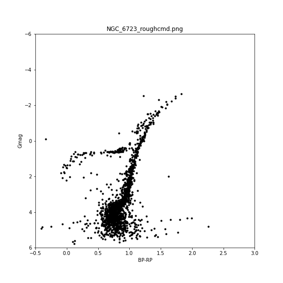

I like to continue my research in astronomy. Basically, I am interested in using various Machine learning and Artificial Intillegency in Astronomy.. In graduate school, i analysed Gaia DR3 data and make Color-magnitude deiagram (CMD) of Galactic globular clusters. After that i used Machine learning for the classification of the images into different clusters. Globular Cluster being one of the old stellar objects, we studied it, using Gaia DR3 datasets. We make CMD for about 150 GCs.
During my research, i use Python for data analysis and plotting. Several packages and module like NumPy, SciPy, Pandas, Matplotlib were used.
I used TensorFlow plateform and Keras API as backend for our model. We used Sci-kit learn for making ML models. I did computer vision to recognise images, extract features and finally make different classes according to their similarities.
